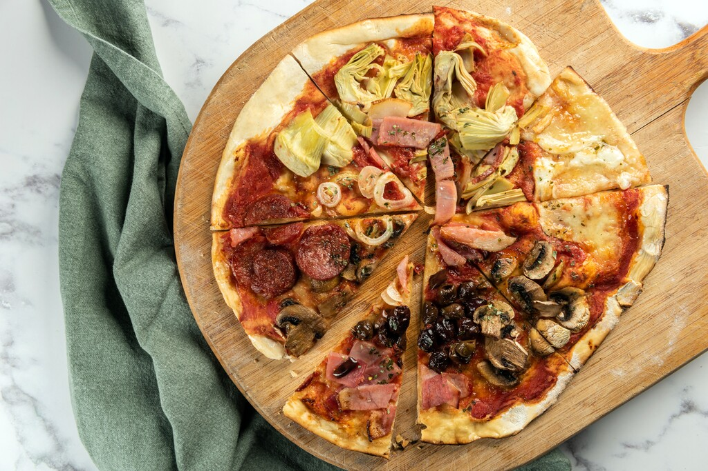

Quattro Stagioni Pizza
Home

Description
Quattro Stagioni - A Classic Italian Four-Seasons Pizza
Quattro Stagioni pizza is a traditional Italian favorite, representing the four seasons with distinct toppings arranged in separate sections.
Each quarter of the pizza offers a unique taste: artichokes for spring, prosciutto for summer, mushrooms for autumn, and black olives for winter.
With a crispy thin crust, rich tomato sauce, creamy mozzarella, and flavorful toppings, this pizza is a true celebration of Italian cuisine.
Perfect for any occasion, this homemade Quattro Stagioni pizza brings variety to every bite. Serve it with a fresh green salad and a glass of Italian wine for an authentic experience.
Buon appetito!
Ingredients:
Ingredients for Quattro Stagioni Pizza (Serves 2-4)
For the Pizza Dough
250g all-purpose flour
150ml warm water
1 tsp salt
1 tsp sugar
1 packet (7g) dry yeast
1 tbsp olive oil
For the Tomato Sauce
200g canned crushed tomatoes
1 tbsp olive oil
1 garlic clove, minced
1 tsp dried oregano
½ tsp salt
½ tsp black pepper
For the Toppings (Four Sections)
100g mozzarella cheese, shredded
50g prosciutto (cooked ham)
50g artichoke hearts, sliced
50g mushrooms, sliced
30g black olives, sliced
1 tbsp olive oil
Fresh basil (optional, for garnish)
The steps to making a classic Quattro Stagioni pizza
Step 1: Prepare the Pizza Dough
- In a small bowl, mix warm water, sugar, and yeast. Let it sit for 5-10 minutes until foamy.
- In a large bowl, combine flour and salt.
- Make a well in the center and pour in the yeast mixture and olive oil.
- Mix until a dough forms, then knead for about 8-10 minutes until smooth.
- Place the dough in a greased bowl, cover with a cloth, and let it rise for 1 hour or until doubled in size.
Step 2: Make the Tomato Sauce
- In a saucepan, heat olive oil over medium heat.
- Add minced garlic and sauté for 30 seconds.
- Stir in crushed tomatoes, oregano, salt, and pepper.
- Let it simmer for 10-15 minutes until slightly thickened.
- Remove from heat and let it cool.
Step 3: Assemble the Pizza
- Preheat your oven to 220°C (430°F).
- Roll out the dough into a thin circle and place it on a baking tray.
- Spread the tomato sauce evenly over the base.
- Sprinkle shredded mozzarella cheese on top.
- Divide the pizza into four equal sections using toppings:
- **Section 1:** Prosciutto (cooked ham)
- **Section 2:** Artichoke hearts
- **Section 3:** Mushrooms
- **Section 4:** Black olives
- Drizzle with olive oil.
Step 4: Bake & Serve
- Bake in the preheated oven for 12-15 minutes or until the crust is golden and crispy.
- Remove from the oven and let it cool for a few minutes.
- Garnish with fresh basil (optional).
- Slice and enjoy!
Buon Appetito! 🍕🇮🇹